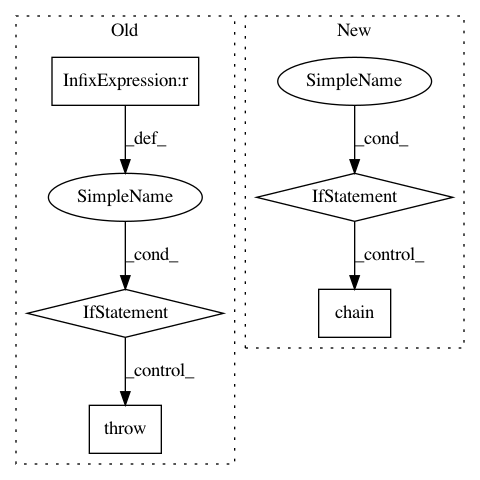

53ef00376510ee9ba4506918db06b25dad4a7ea4,inferno/callbacks.py,BestLoss,initialize,#BestLoss#,178
Before Change
self.best_losses_ = None
def initialize(self):
if len(self.keys_possible) != len(self.signs):
raise ValueError("The number of keys and signs should be equal.")
self.best_losses_ = {key: -1 * sign * np.inf for key, sign
in zip(self.keys_possible, self.signs)}
return self
After Change
signs = chain(self.default_key_signs.values(), self.key_signs.values())
signs_allowed = sorted(self._op_dict.keys())
for sign in signs:
if sign not in signs_allowed:
raise ValueError(
"Wrong sign {}, expected one of {}."
"".format(sign, ", ".join(map(str, signs_allowed))))
items = chain(self.default_key_signs.items(), self.key_signs.items())
self.best_losses_ = {key: -1 * sign * np.inf for key, sign in items}
return self
def _yield_key_sign_loss(self, history):
In pattern: SUPERPATTERN
Frequency: 3
Non-data size: 5
Instances
Project Name: dnouri/skorch
Commit Name: 53ef00376510ee9ba4506918db06b25dad4a7ea4
Time: 2017-07-31
Author: benjamin.bossan@ottogroup.com
File Name: inferno/callbacks.py
Class Name: BestLoss
Method Name: initialize
Project Name: pgmpy/pgmpy
Commit Name: 9c1978125348ab67190995586175a7d6402bf247
Time: 2013-12-31
Author: ankurankan@gmail.com
File Name: src/BayesianModel/BayesianModel.py
Class Name: BayesianModel
Method Name: __init__
Project Name: pgmpy/pgmpy
Commit Name: 9c1978125348ab67190995586175a7d6402bf247
Time: 2013-12-31
Author: ankurankan@gmail.com
File Name: src/BayesianModel/BayesianModel.py
Class Name: BayesianModel
Method Name: add_edges_from